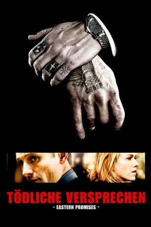

Auszeichnungen: für 1 Oscars nominiert
 gesehen am 15.02.2016
gesehen am 15.02.2016Alternativ: Eastern Promises
Auszeichnungen: für 1 Oscars nominiert gesehen am 15.02.2016
 
 IMDB-Wertung: 7.7 / 10
IMDB-Wertung: 7.7 / 10  Metascore:
Metascore: 
Ein schwangeres russisches Mädchen wird in eine Londoner Notstation eingewiesen – ihr Kind kann gerettet werden, doch die drogenabhängige Mutter überlebt die Geburt nicht. Die Hebamme Anna kümmert sich um das Baby und entdeckt bald das mysteriöse Tagebuch der verstorbenen jungen Frau. Eine Visitenkarte führt sie schließlich in ein russisches Restaurant, dessen Betreiber Semyon ihr das Buch aus irgendeinem Grund unbedingt übersetzen möchte. Anna ahnt nicht, dass sie längst in den gefährlichen Bereich der ‘Vory V Zakone’-Mafia vorgedrungen ist. Nur der Chauffeur des Familienclans, Nikolai, kann ihr jetzt noch helfen.
Jahr: 2007
Dauer: 100 Minuten
FSK: 16
Land: USA Studio: Focus FeaturesTonspuren: DTS - ,
Untertitel: Deutsch, Englisch,
Auflösung: 1080p (1920x1040) Größe: 9728 MB
Regisseur:  David Cronenberg
David Cronenberg
Drehbuch: Steven Knight
Soundtrack: Howard Shore
Darsteller:
 Sarah-Jeanne Labrosse als Tatiana
Sarah-Jeanne Labrosse als Tatiana Naomi Watts als Anna
Naomi Watts als Anna Sinéad Cusack als Helen
Sinéad Cusack als Helen Jerzy Skolimowski als Stepan
Jerzy Skolimowski als Stepan Tatiana Maslany als Tatiana
Tatiana Maslany als Tatiana Viggo Mortensen als Nikolai
Viggo Mortensen als Nikolai Vincent Cassel als Kirill
Vincent Cassel als Kirill Armin Mueller-Stahl als Semyon
Armin Mueller-Stahl als Semyon Donald Sumpter als Yuri
Donald Sumpter als Yuri Tamer Hassan als Chechen
Tamer Hassan als Chechen Peter Rnic als Fingers , uncredited
Peter Rnic als Fingers , uncredited John Warman als Policeman , uncredited
John Warman als Policeman , uncreditedDatei: X:\2007(N-Z)\Tödliche Versprechen - Eastern Promises (2007, FSK16, 1920x1040).mkv seit 12.02.2016
Festplatte: HD 2007(A-Z)-2008(A-F)
 Es gibt insgesamt 56 Filme in der Gruppe '2007(N-Z)'
Es gibt insgesamt 56 Filme in der Gruppe '2007(N-Z)'